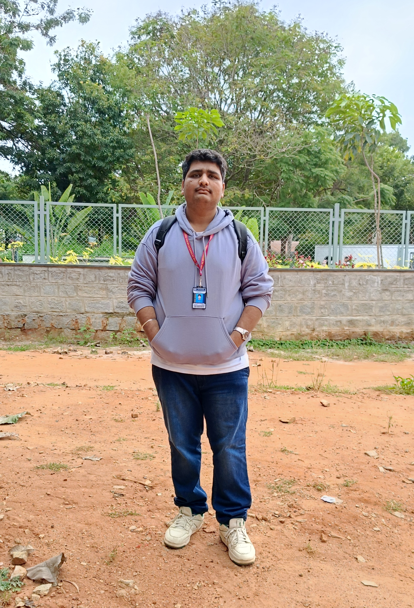

D Yoga Venkata Prasad

Summary
I am Hard working and dedicated individual eager to learn more in the domain of web development.
Education Details
- Primary Schooling-Bala Bharathi School,Ballari
- High school-Vivekananda High school,Ballari
- Engineering in Electronics and Telecommunication from SIR M Visvesvaraya Institute of Techonolgy affliated to VTU , Bangalore
Projects and certificates
- Automatic Plant Watering System (IOT Solution)
- UDEMY Certified Web Developer
Skills
- HTML
- Css
- Java Script and framwork Bootstrap
Strengths
- Hard working
- Dedicated
- Team Person
About Me
Contact me